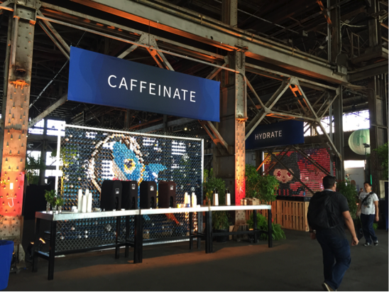
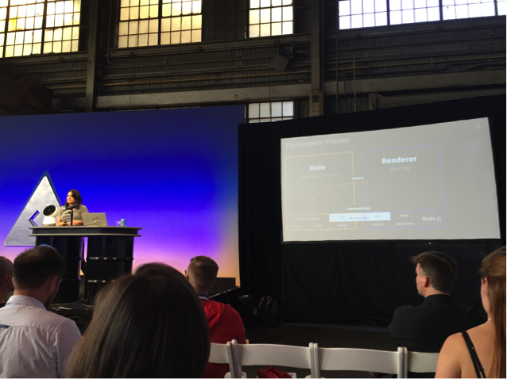

Recap: GitHub Universe
With many thanks to my coding school alma mater, MakerSquare, I was very fortunate to win a couple of tickets to the GitHub Universe conference earlier this month. The hours that I spent there were productive and insightful. Here are some of the highlights:
 GitHub covered all the bases with “caffeinate” and “hydration” stations.
Keynote Speaker: Kellan Elliott-McCrea (Former CTO, Etsy)
Kellan delivered a great keynote that centered on fomenting the culture necessary for a successful engineering team.
Constant learning, he said, must not only be promoted, but also a sustained practice. This involves a certain degree of reflection and focus on environmental variables, like the build process. For instance, it’s important to ask what about a build environment can be changed, and what should be changed? This type of investment in building a more stable and stronger environment, either through coded solutions or through teaching (with tools, documentation, training, etc.) increases a team’s confidence to take risks. He also spoke about how minimizing harbingers to learning is just as—if not more—important as promoting learning. Harbingers include things like lacking the time to devote to learning, path dependency, poor tooling, and lack of confidence, among others.
Kellan Elliott-McCrea on why we cannot afford to stop learning.
Talks on Continuous Integration
There were several talks given on CI, along with demos of TravisCI. The low down: CI should not be an afterthought, as it could have a negative effect on a team’s moral. Instead, it should be integral, easy to use, and scalable.
CI in build systems is essential to go from yolo-freestyle deploys to concrete, confident deploys.
Every Company is Software Company
It was inspiring to hear from a panel of tech decision makers and influencers at top companies like GE, Ford, and Target, about how they are turning farmers, consumers, you, and me into techies and end-users. Who knew, for instance, that John Deere had over 100 mobile apps in production? They spoke about differences in management style across industries, how to bridge divergent styles, and the importance of building common tools across cultures, languages, and backgrounds for those who may have never used common tools before. Anecdotes were provided from stories of UI/UX and boardroom discussions.
Afternoon waffles sponsored by waffle.io. Really, ALL the bases were belonged to GitHub at this conf.
Changing Lives with Open Data
Hidenori Fujimura with the Geospatial Information Authority of Japan talked about how new mapping technologies and robotics were used to assess damages after catastrophes, such as earthquakes and tsunamis. Abhi Nemani, from the Board of OpenGov, spoke to how government resources could be optimized when both data reporting and analysis were more accessible, giving anecdotes and live demos of technologies in production from his time as the Chief Data Officer for the City of Los Angeles. Danny Whelan demoed Remix,a platform used by municipal transportation agencies to plan routes and other logistics.
Desktop Apps with Web Technologies using Electron
 Jessica Lord presented and demoed the Electron framework.
More and more quality apps are now being built using technologies that were once considered “reserved” for the web, like JavaScript, HTML, and CSS (ex: Spotify). Electron, created by GitHub, leverages these technologies along with Chromium—the Chrome engine—and Node.js. Under the hood, an electron app has two processes: main and render. The main process consists of the app’s lifecycle, from when the app is started until it is ended; modules allow you to interact with the system UI and allow for inner-process communication (ipc). The renderer is responsible for areas like the DOM, web-frame, ipc with the main ipc, among others. There’s also chrome debugger support!
JIBO
A JIBO robot, from the company of the same name, was demoed and the audience at this talk was converted to a sea of JIBO-believers. Though not yet widely released, the JIBO has a JavaScript API that is available on npm. Included in the demo were a series of robotic animations that were programmed using their SDK and with Gaia—a game development tool.
Offline Web Apps
Myk Melez with Mozilla covered how service workers support offline-ing by transparently intercepting all network requests that an application might make. A great use case for service workers would be for an app that performs periodic background sync. A couple of caveats to keep in mind when seeking to use this technology include browser support and a requirement that your website use HTTPS. Myk also demoed a tool that can enable offline capability for a GitHub Pages web app: oghliner.
GitHub Tricks
Check ‘em out: https://github.com/tiimgreen/github-cheat-sheet
David Tan (MKS15) with a massive GitHub Universe backdrop.